01 / 会话
新会话与输入区
本轮预览通过
320px 模型名称、推理等级和发送入口可见；新建后收起抽屉。
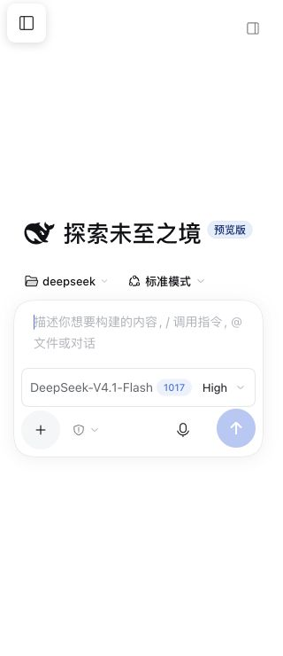
02 / 会话
会话列表与更多菜单
本轮预览通过
更多入口常驻 44×44；置顶、重命名、分叉、归档和复制 ID 均可见，未修改历史。
03 / 会话
历史消息与工具结果
本轮预览通过
实际历史消息加载、长文本与工具结果可阅读；为避免留存个人内容不保存正文截图。
04 / 会话
轨迹与工具调用列表
本轮预览通过
实际轨迹页加载，390px 页面无横向溢出；没有执行或重放工具调用。
05 / 会话
指令与长期目标入口
本轮预览通过
文件、目标、计划、反馈、压缩、权限、模型和日志入口可达；目标草稿已清空。
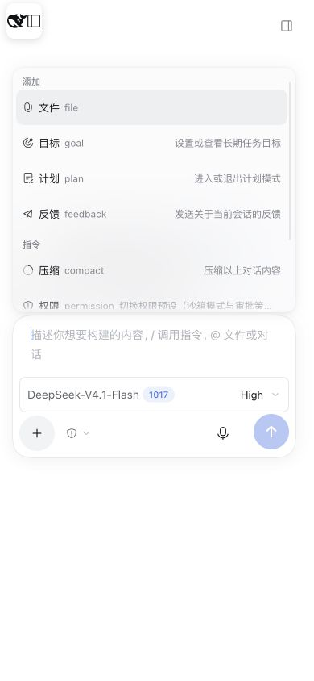
06 / 会话
访问模式
本轮预览通过
四种模式完整可见；未改变权限策略。
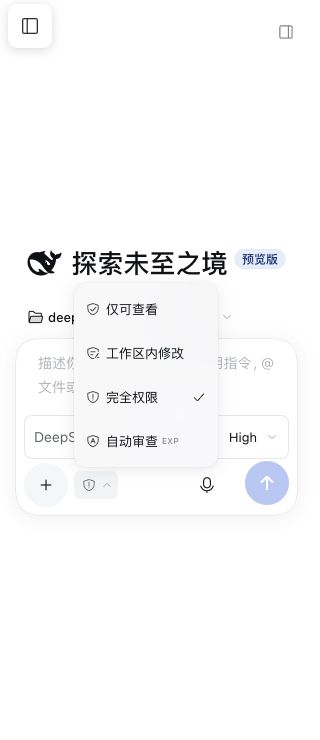
07 / 会话
模型菜单与推理等级
前轮已验
前轮已验证多级菜单及返回；本轮验证标签和输入区，不重复修改模型。
08 / 会话
Agent 模式选择
本轮预览通过
标准、PTC、极简、创造模式的选择菜单可阅读；未修改模式。
09 / 会话
反馈表单
本轮预览通过
分类、输入区及提交按钮可达；未向他人发送反馈。
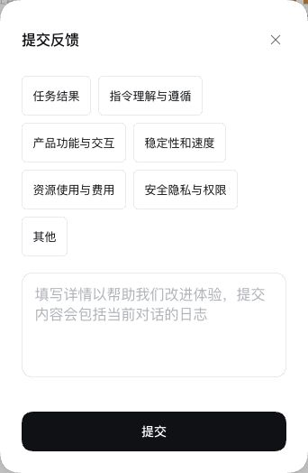
10 / 会话
日志导出与文件保存
代码完成·待真机
App 下载代理、系统保存器和生命周期测试通过；真实 ArkWeb 下载及保存仍需手机。
11 / 会话
文件上传与附件
代码完成·待真机
保留 ArkWeb 默认文件选择器；手机文件 URI、图片选择和服务端接收尚未端到端验收。
12 / 会话
运行中任务、授权问题、计划与目标状态
待场景验证
当前没有合适的进行中任务；未为验证而启动会消耗额度或修改文件的 Agent 任务。
13 / 会话
分支会话、重命名与归档提交
待场景验证
入口可达；未对既有会话提交改动。
14 / 工作区
工作区选择与目录浏览
本轮预览通过
现有工作区、添加入口、远端目录树和取消操作正常；未新建目录。
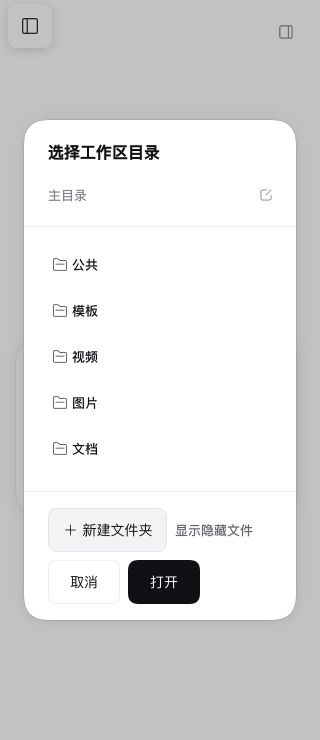
15 / 工作区
文件树
本轮预览通过
文件行提升到 44px；文件面板不再触发 React #185。
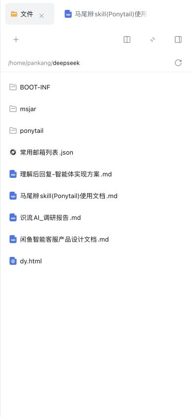
16 / 工作区
文件标签、新标签和关闭
本轮预览通过
窄屏标签与操作分行；横屏恢复单行；能够打开、切换和关闭。
17 / 工作区
Markdown、代码与文本查看
本轮预览通过
Markdown 和代码模式实际打开；纯文本入口已确认，长文件名可横向浏览。
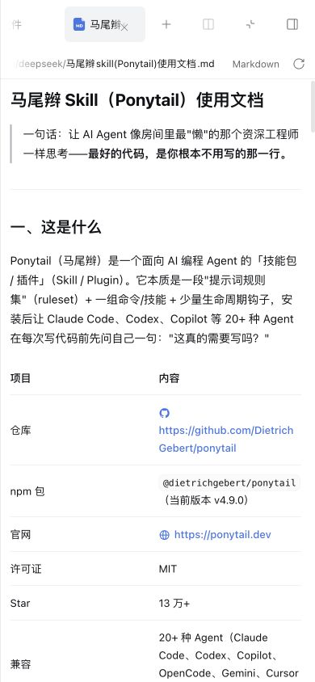
18 / 工作区
HTML、图片、PDF、音视频预览
待场景验证
本轮没有逐一准备各格式样本；不把通用容器适配等同于各格式都通过。
19 / 工作区
终端与 Shell 选择
本轮预览通过
可选 bash，终端成功连接并显示提示符；已关闭检查用空终端，没有执行命令。
20 / 工作区
终端软键盘与组合键
代码完成·待真机
浏览器可聚焦终端；手机输入法、Ctrl/Tab 等组合输入待真机验收。
21 / 工作区
横屏、全屏工作面板
本轮预览通过
844×390 下工作面板宽约 844px，标签栏约 60px；关闭按钮可用。
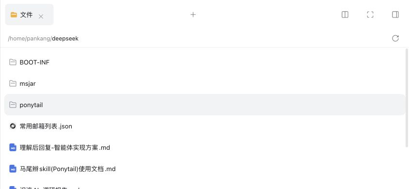
22 / 工作区
分栏、拖动与浮动窗口
待场景验证
分栏入口保留，不再按 disabled 隐藏；手机拖动和多窗操作尚未验收。
23 / 设置
账号与余额
本轮预览通过
仅记录布局：390px 无横向溢出、五个分类可达；未保存账号或余额截图，未充值。
24 / 设置
通用设置
本轮预览通过
语言、外观、字号及工作步骤设置可浏览，未更改配置。
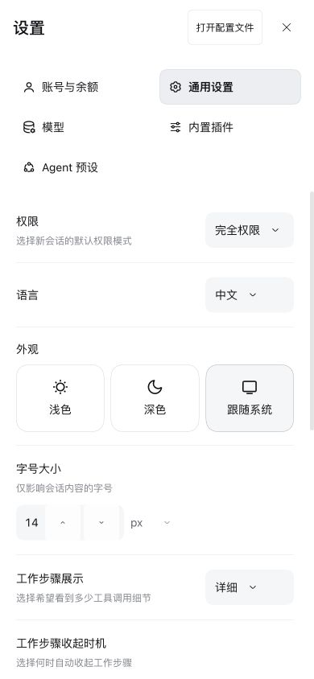
25 / 设置
快捷键设置
前轮已验
前轮验证二级弹窗与逐层返回；本轮没有重新录制。
26 / 设置
模型提供商表单
本轮预览通过
新增提供商页面可达，输入区和底部操作可见；取消退出，未读取或填写密钥。
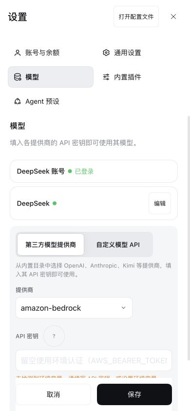
27 / 设置
内置插件清单
本轮预览通过
清单、搜索框和模式筛选可查看。
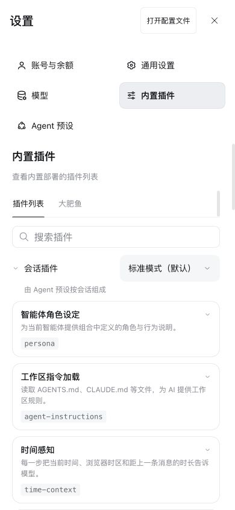
28 / 设置
Agent 预设与说明
本轮预览通过
四种内置模式及二级说明可读，滚动正常。
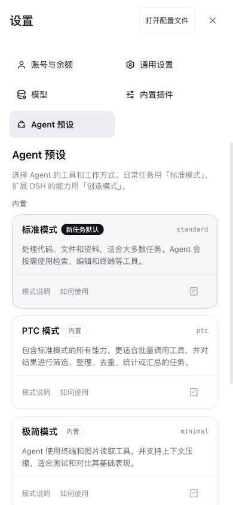
29 / 设置
打开原始配置文件
桌面能力未适配
上游调用 Host 的 openSettingsDocument，实际是在服务器打开本地编辑器；尚无手机内原始文件查看适配。
30 / 插件
插件总览、添加与安装表单
本轮预览通过
安装入口及来源菜单可达；320×450 下输入框和安装按钮都可通过滚动到达，未执行安装。
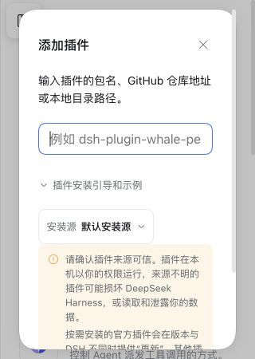
31 / 插件
子智能体
本轮预览通过
输入框、模型开关和保存入口可浏览；开关恢复 36×20 的原比例。
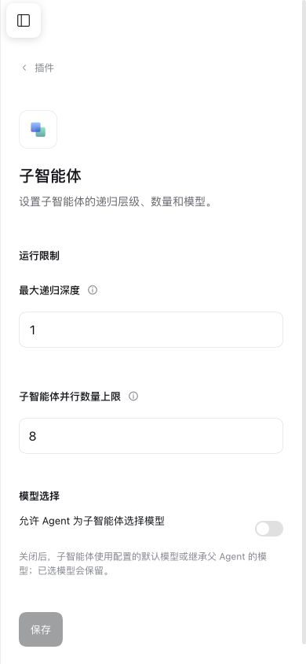
32 / 插件
网页搜索
本轮预览通过
密钥为空白保留态，地址、搜索次数和保存入口可浏览，未保存。
33 / 插件
Agent 循环
本轮预览通过
并行数量及保存入口可浏览。
34 / 插件
终端设置
本轮预览通过
命令超时与输出上限可查看。
35 / 插件
智能体团队
本轮预览通过
详情、组件和来源可查看；当前未启用，未修改运行状态。
36 / 插件
自动授权审查
本轮预览通过
详情、组件开关与状态可查看；长说明和状态分行。
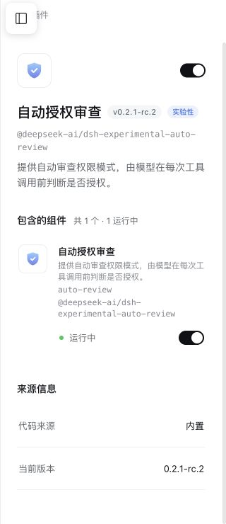
37 / 插件
开发者工具
本轮预览通过
组件与设置可查看；未启用调试能力。
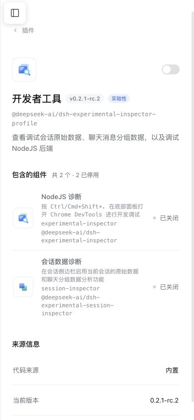
38 / 插件
桌面 NodeJS DevTools
桌面能力未适配
属于桌面开发者工具，不等于手机内 DevTools。
39 / 插件
语音设置与安装引导
本轮预览通过
设备、语言、模型来源及准备说明可查看。
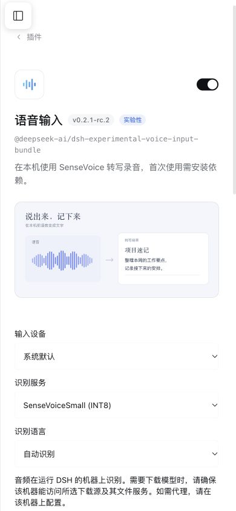
40 / 插件
语音转写服务
服务前置未满足
服务端提示首次需要下载并准备 SenseVoice 模型；本轮未安装。
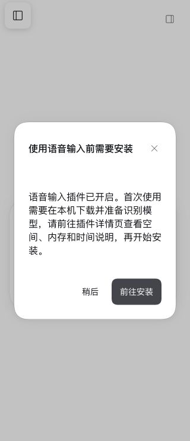
41 / 插件
网页录音与系统授权
代码完成·待真机
HTTPS 优先、可信来源音频授权和系统权限代码已实现；实际录音、拒绝后重试需手机。
42 / 插件
大肥鱼设置
服务前置未满足
页面打开，但插件提示未连接 DSH Host；属于上游插件连接问题。
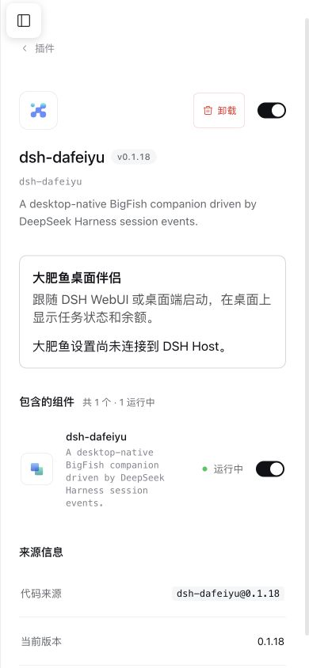
43 / 自动化
列表、筛选、搜索与新建入口
本轮预览通过
空态与控件正常；新建入口可进入会话，未创建定时任务。
44 / 自动化
任务详情、编辑、启停与运行记录
待场景验证
当前列表为空，未在生产建立定时任务，待隔离样本验收。
45 / 连接
登录与外部授权窗口
代码完成·待真机
既有弹窗生命周期测试通过；本轮增加普通外链接管，真实登录回流仍需手机。
46 / 连接
HTTPS 优先与局域网备用
代码完成·待真机
票据仍严格校验；HTTPS 选择和 LAN 回退测试通过，业务 API 地址不变；切换网络需手机验收。
47 / 连接
系统返回与错误恢复
代码完成·待真机
前轮验证网页层级返回；本轮代码保留该协议并补齐下载清理，真实系统返回待验收。